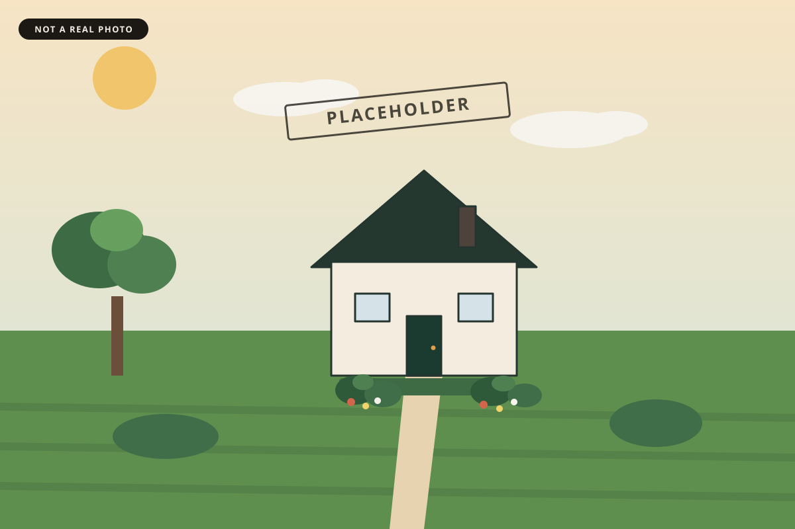
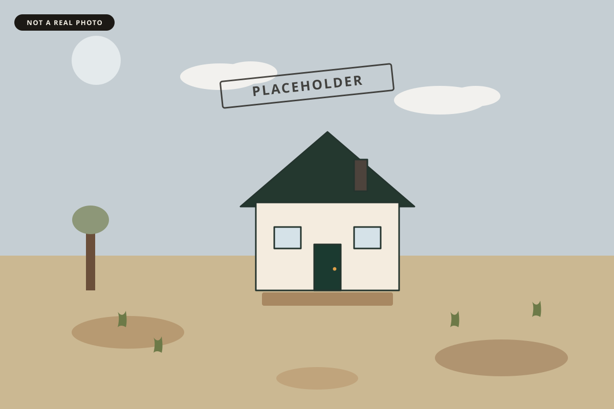

Acme Everything
Before / after
Same house, two versions of the yard. These are placeholder diagrams, not a photograph and not a finished job.

After
BeforeDrag the handle, or focus it and use the arrow keys. Home and End jump to either side.